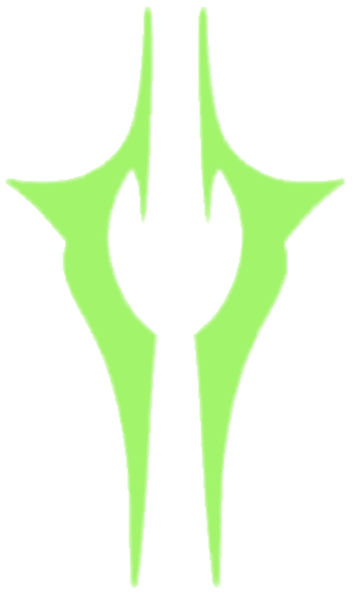

Victor Siena

Victor
Siena Art.
Eu sou Victor Siena,
artista e tatuador!
Meus projetos são feitos no freehand, desenvolvidos para a anatomia de cada cliente. Cada traço é pensado para ter a melhor adaptação e encaixe no seu corpo.
Se você quer uma tatuagem exclusiva, feita para o seu corpo, me chama que te explico tudo.
O próximo
traço.
Cyber Armor • 100% freehand. Projetos desenvolvidos para cada anatomia, com adaptação e encaixe pensados para o seu corpo.
Conceitos e referências de estilo. Consulte a disponibilidade de cada desenho.
Feito para
o seu corpo.
O que você
quer criar?
Quer um upgrade desse também?
Me conta sua ideia que te explico tudo!